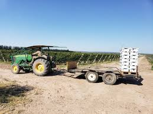
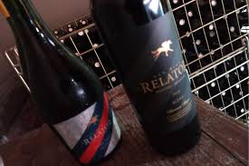

Situación COVID 19

La Corporación Vitivinícola Argentina (COVIAR) le solicitó al gobierno 13 medidas para enfrentar la
crisis que profundizó la pandemia. Reintegros, liquidación de exportaciones y
costos.
Leer más...
Catas de vino Online
En el contexto actual, así como muchos rubros se han reinventado, el de los vinos también lo hizo
con una propuesta innovadora: las
catas online. Hay diferentes opciones, para todos
los gustos.
Leer más...
Aumentó el consumo

Contra todos los pronósticos y pese al cierre de bares y restaurantes, los despachos de vinos al
mercado interno crecieron 1,1% en abril. Los referentes del sector
relacionan la mejora con un cambio en los hábitos de consumo, que permitió compensar la caída de
ventas en negocios gastronómicos con un repunte notable de la
consumición hogareña.
Leer más...
Vinos nuevos

12 pequeños productores que
vale la pena conocer y seguir. Los pequeños productores
gozan de un aura particular. La del tesoro descubierto, del dato que otros no tienen y uno sí, el
del dato que te puedo dar y que te pone del lado de los entendidos.
Leer más...
Alta Gama Home Edition
Experiencia inédita: así será la primera
feria de vinos 100% virtual de Argentina.
La feria de vinos Alta Gama se reconvirtió en Alta Gama Home Experiencie. Recibís 10 botellas de
vino y otros productos para degustar en tu hogar.
Leer más...
Calentamiento Global
A diario leemos sobre los efectos del cambio climático en el mundo. Ya nadie puede negar que el
mundo no es mismo que hace diez año y lo peor es que no parece haber datos favorables para el
futuro. Inundaciones, sequías, plagas y muchos otros efectos desafían a los cultivos del mundo y
lógicamente
la viticultura no escapa a los azotes climáticos.
Leer
más...